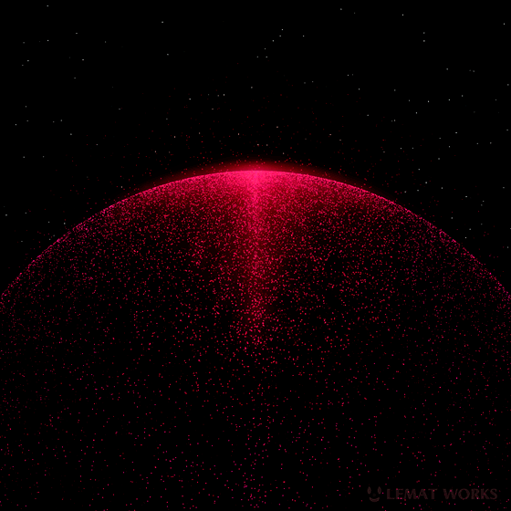

A living 3D brain graph
Entities bloom into a force-directed 3D graph as the model generates them. The same concept merges across meetings by similarity — so your knowledge literally connects itself.

mem-it records a meeting and — fully on your iPhone — transcribes it, builds a living 3D knowledge graph, extracts your action items, and lets you ask it anything. No cloud. No account. Nothing ever leaves the device.

Record once, and mem-it runs a strict sequential pipeline on your device — loading, inferring, and unloading each model so a flagship phone can do the work of a cloud notetaker.
Capture a meeting as audio, right on your phone.
WAV
Whisper turns speech into a full transcript.
Whisper small
Llama 3.2 streams a summary, action items, and a graph.
Llama 3.2 1B
Embeddings power grounded, cited answers to any question.
GTE-large
Entities bloom into a force-directed 3D graph as the model generates them. The same concept merges across meetings by similarity — so your knowledge literally connects itself.
Not just RAG. A 1B model routes each question to a tool — search your transcripts or list your todos — then answers grounded in the result, streaming token-by-token with citations.
Every meeting becomes a transcript, a summary, and a structured to-do list — extracted on-device, no copy-paste, no cloud.
Transcripts are untrusted — an attendee can say “ignore your instructions.” mem-it fences that text as data with an instruction hierarchy, so injected commands are never obeyed.
Export a meeting as a portable .memit bundle and AirDrop it to another iPhone, where its concepts merge into their brain graph. Peer-to-peer, offline, no server.
Exactly one QVAC model resident at a time — load → infer → unload — with every load, TTFT, and tokens/sec logged. Built to fit a phone's RAM budget.
Strategy, salaries, deals, health. Every cloud notetaker uploads all of it. mem-it proves you don't have to — a flagship phone can transcribe, reason over, and recall your conversations with no network dependency at all.
Don't take our word for it: turn on airplane mode and run a full record → recall flow. It still works.
mem-it runs on-device through Tether's @qvac/sdk, which needs real Apple Silicon hardware — so you build it straight to your phone from source. Takes a few minutes.
git clone https://github.com/fabianferno/mem-it.git
cd wack/cortexnpm install
npx expo install expo-audio expo-sqlite react-native-webview \
expo-sharing expo-document-pickernpm run bundle:graphnpm run ios # real device required — QVAC needs Apple SiliconFirst launch downloads the three QVAC models (Whisper, Llama 3.2 1B, GTE-large) into the app's cache. After that, mem-it runs entirely offline.
npm test # 45 unit tests, no device needed